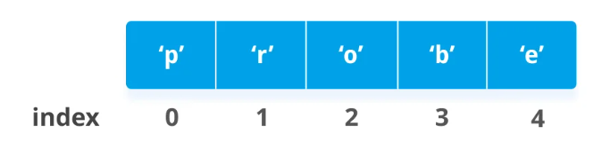

Список
Список - это упорядоченная коллекция(набор) данных(обтектов) языка Python
Создание
Существует несколько способов создания списков:
# Буквальный
lst = [] # пустой список
lst = [1, 2, 3, 4] # Список из чисел
lst = ['2', 'a', 'b'] # Список из строк
lst = [1, 3, '2', '3', 0, [], ()] # Список из разных типов данных
# С помощью ключевого слова list
lst = list()
Индексация
Список - это упорядоченный тип данных, каждому элементу списка присвоен номер(индекс)
Индексация списка начинается с 0 
Мы можем использовать индекс, чтобы получать по нему значение из списка
# Создаем список из строки
>>> lst = list('Hello World')
>>> print(lst)
['H', 'e', 'l', 'l', 'o', ' ', 'W', 'o', 'r', 'l', 'd']
# 0 индекс
>>> print(lst[0])
H
>>> print(lst[2])
l
>>> print(lst[7])
o
# 0 1 2 3 4 - положительная индексация
# -5 -4 -3 -2 -1 - отрицательная
lst = [1, 2, 3, 4, 5]
>>> print(lst[1])
2
>>> print(lst[-1])
5
Встроенные методы списков:
| Метод | Что делает |
|---|---|
| append(x) | Добавляет элемент в конец списка |
| extend(L) | Расширяет список, добавляя в конец все элементы списка L |
| insert(i, x) | Вставляет на i-ый индекс значение x, все остальные элементы смещаются вправо |
| remove(x) | Удаляет первый элемент в списке, имеющий значение x. ValueError, если такого элемента не существует |
| pop([i]) | Удаляет i-ый элемент и возвращает его. По умолчаию удаляется последний элемент |
| index(x, [start [, end]]) | Возвращает положение первого элемента со значением x (при этом поиск ведется от start до end) |
| count(x) | Возвращает количество элементов со значением x |
| sort() | Сортирует список а альфанумерическом порядке. Принимает аргументом функцию, которая позволяет изменить тим сортировки |
| reverse() | Разворачивает список |
| copy() | Поверхностная(Shallow) копия списка |
| clear() | Удаляет все значения из списка |
>>> lst = ['1', '3', '4']
['1', '3', '4']
>>> lst.append('hi')
>>> print(lst)
['1', '3', '4', 'hi']
>>> lst.append('there')
>>> print(lst)
['1', '3', '4', 'hi', 'there']
>>> lst.extend(['2', '3', '4'])
>>> print(lst)
['1', '3', '4', 'hi', 'there', '2', '3', '4']
>>> element = lst.pop()
>>> print(element, lst)
4 ['1', '3', '4', 'hi', 'there', '2', '3']
>>> print(lst.index('3'))
1
>>> print(lst.count('3'))
2
>>> lst.sort()
>>> print(lst)
['1', '2', '3', '3', '4', 'hi', 'there']
>>> lst.reverse()
>>> print(lst)
['there', 'hi', '4', '3', '3', '2', '1']
>>> lst_copy = lst.copy()
>>> lst.clear()
>>> print(lst)
[]